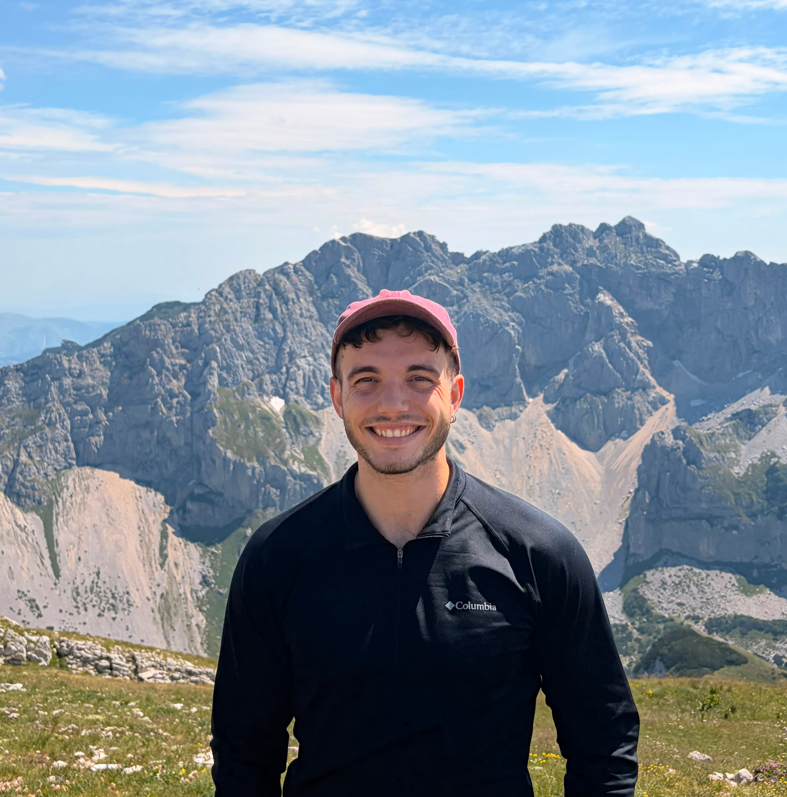
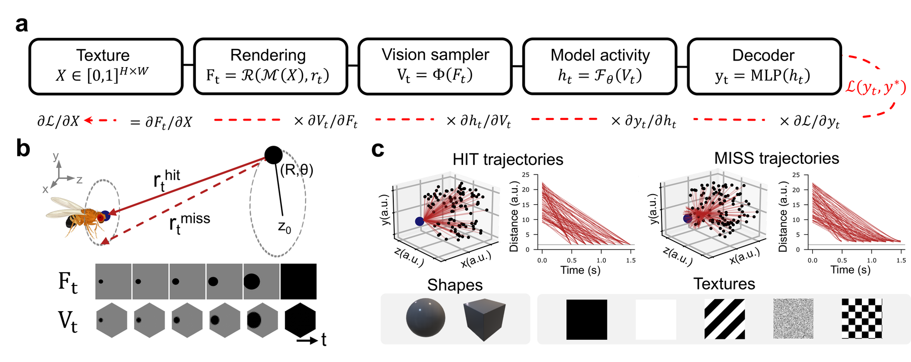
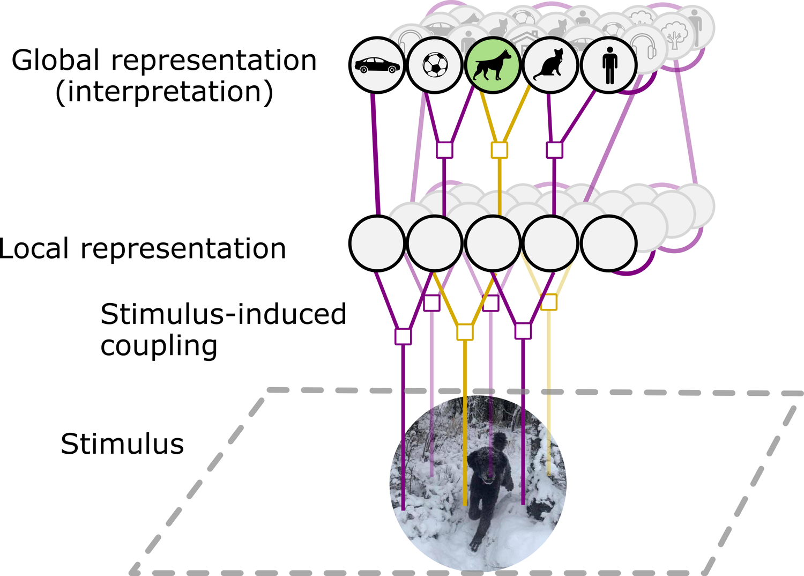
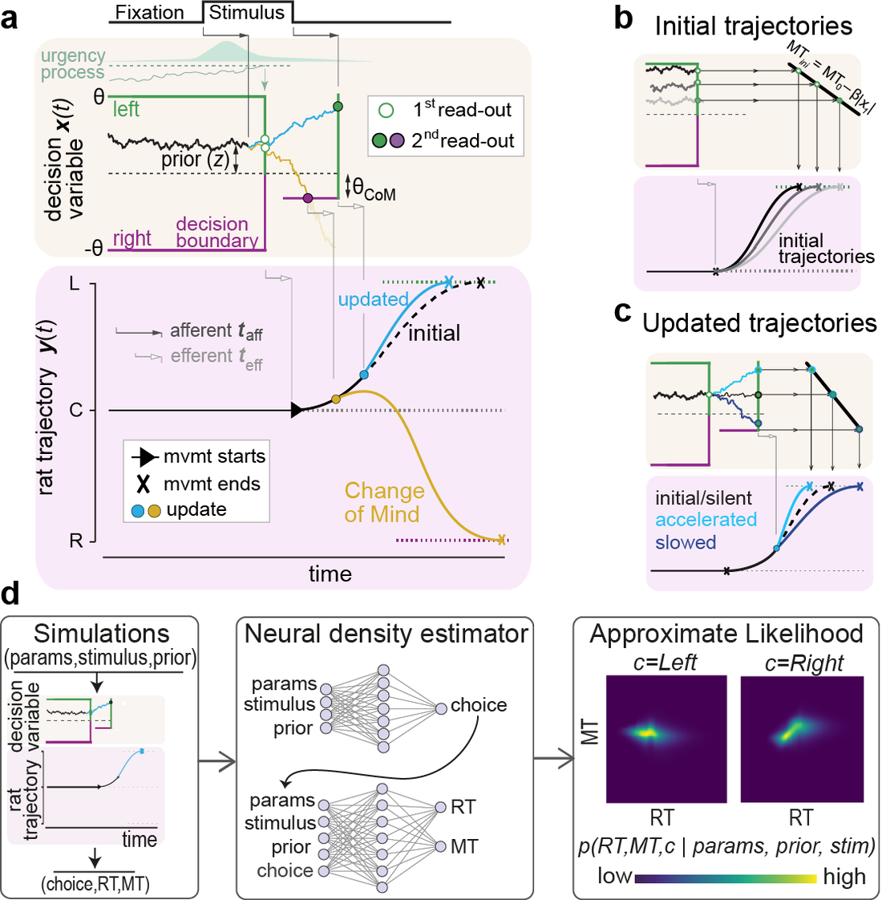

I work at the intersection of machine learning and
computational neuroscience.
Based in Barcelona.
ABOUT
I build and study machine learning models of how neural systems perceive — bridging computational neuroscience and modern deep learning.
My work spans probabilistic graphical models, recurrent neural networks, and biologically constrained vision models, with a recent focus on adversarial robustness: What breaks these networks, and what that reveals about the computations they actually perform.
Currently a PhD researcher at Centre de Recerca Matemàtica (CRM) and Universitat Politècnica de Catalunya (UPC) , Barcelona.
PROJECTS


